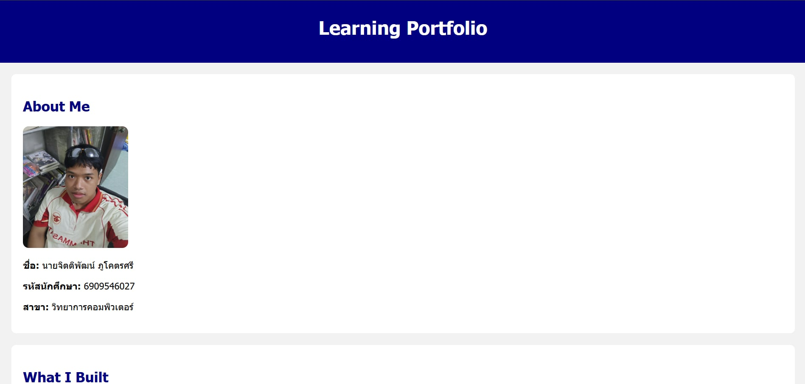
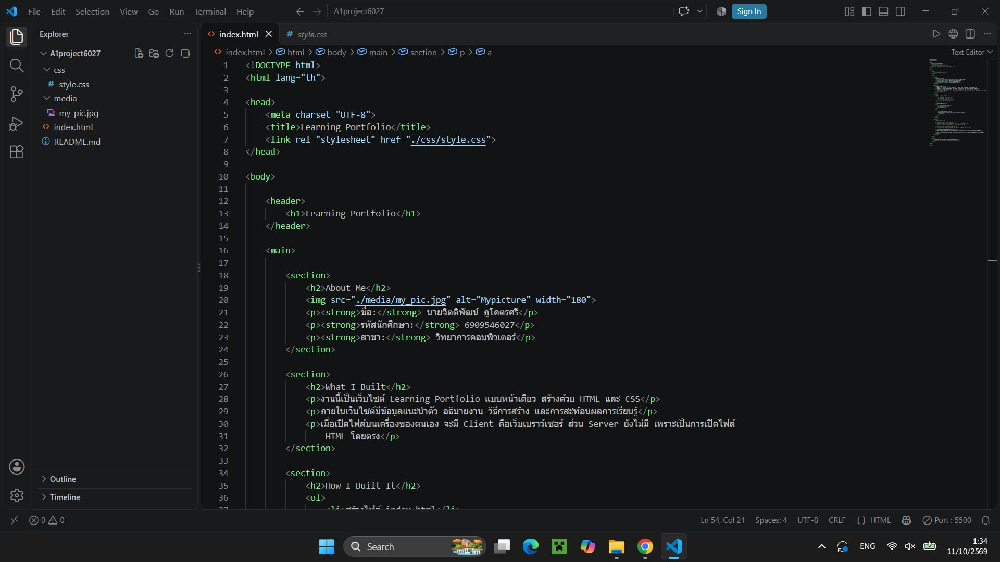
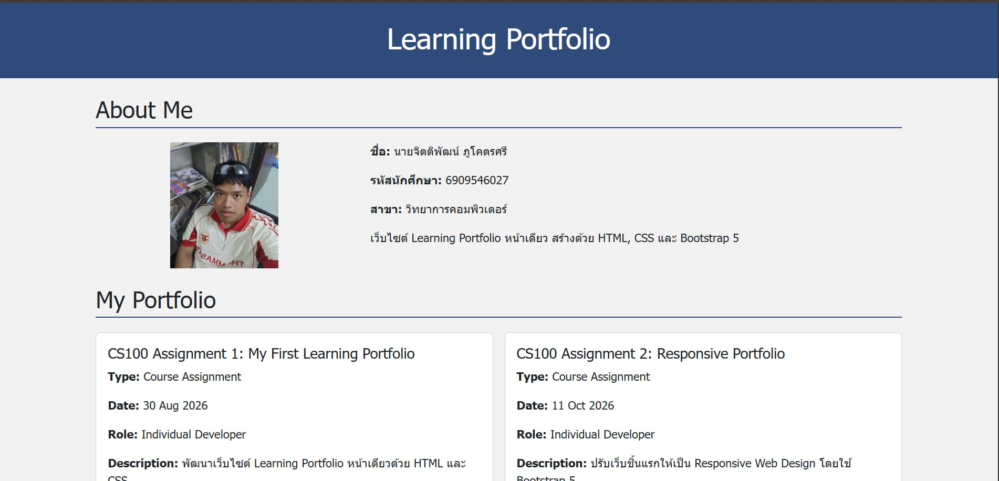
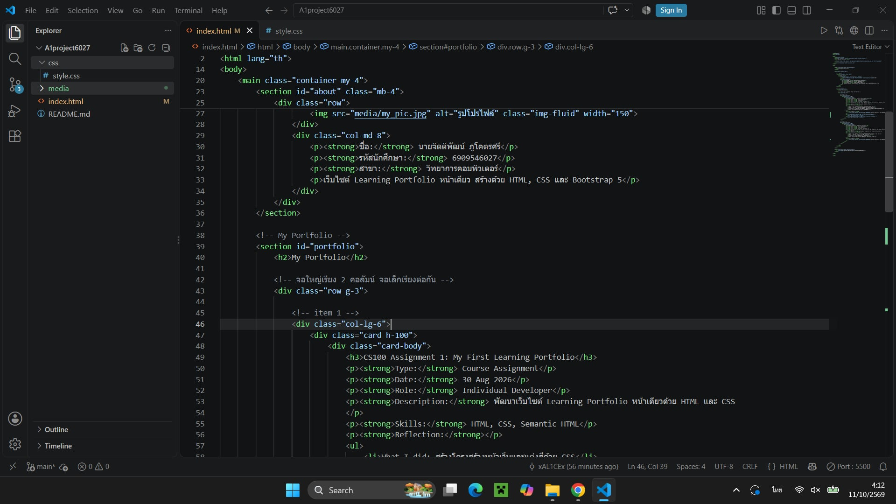
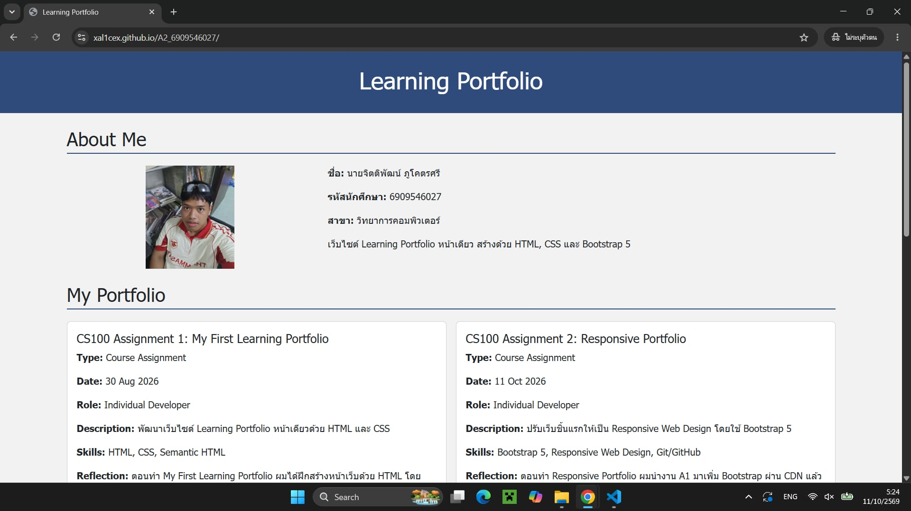

About Me

ชื่อ: นายจิตติพัฒน์ ภูโคตรศรี
รหัสนักศึกษา: 6909546027
สาขา: วิทยาการคอมพิวเตอร์
เว็บไซต์ Learning Portfolio หน้าเดียว สร้างด้วย HTML, CSS และ Bootstrap 5
My Portfolio
CS100 Assignment 1: My First Learning Portfolio
Type: Course Assignment
Date: 30 Aug 2026
Role: Individual Developer
Description: พัฒนาเว็บไซต์ Learning Portfolio หน้าเดียวด้วย HTML และ CSS
Skills: HTML, CSS, Semantic HTML
Reflection: ตอนทำ My First Learning Portfolio ผมได้ฝึกสร้างหน้าเว็บด้วย HTML โดยแบ่งเป็น header, section About Me และส่วนอธิบายงาน แล้วใช้ CSS แต่งสีหัวข้อ สีพื้นหลัง และปรับขนาดรูปโปรไฟล์ ทำให้เข้าใจว่า HTML กำหนดโครงสร้าง ส่วน CSS กำหนดหน้าตา และต้องเชื่อมกันด้วยแท็ก link ใน head ตอนแรกรูปโปรไฟล์ไม่แสดงเพราะผมเขียน path ผิด จึงตรวจว่าไฟล์อยู่ในโฟลเดอร์ media แล้วแก้เป็น relative path จนรูปขึ้น ถ้าพัฒนาต่ออยากปรับให้หน้าเว็บใช้งานบนมือถือได้ดีขึ้น
Evidence:


CS100 Assignment 2: Responsive Portfolio
Type: Course Assignment
Date: 11 Oct 2026
Role: Individual Developer
Description: ปรับเว็บชิ้นแรกให้เป็น Responsive Web Design โดยใช้ Bootstrap 5
Skills: Bootstrap 5, Responsive Web Design, Git/GitHub
Reflection: ตอนทำ Responsive Portfolio ผมนำงาน A1 มาเพิ่ม Bootstrap ผ่าน CDN แล้วใช้ container, row และ col-md-4 กับ col-md-8 จัดรูปและข้อมูลใน About Me ส่วนการ์ดผลงานใช้ col-lg-6 ให้เรียงสองคอลัมน์บนจอใหญ่ และเรียงต่อกันบนมือถือ ทำให้เข้าใจว่า grid ของ Bootstrap แบ่งหน้าจอเป็น 12 ส่วน และ breakpoint อย่าง md กับ lg กำหนดว่า layout จะเปลี่ยนที่ขนาดจอเท่าไร ปัญหาที่เจอคือตอนแรกลิงก์ CDN ของ Bootstrap ไม่ครบ หน้าเว็บจึงไม่มีสไตล์ ผมตรวจ URL แล้วแก้เป็นลิงก์ที่ถูกต้อง และตัวหนังสือสีขาวใน header มองไม่เห็นจนเพิ่มสีพื้นหลังใน style.css ถ้าพัฒนาต่ออยากลองใช้ component อื่นของ Bootstrap เช่น navbar และปรับตัวอักษรให้อ่านง่ายขึ้น
Evidence:


Deployed:
